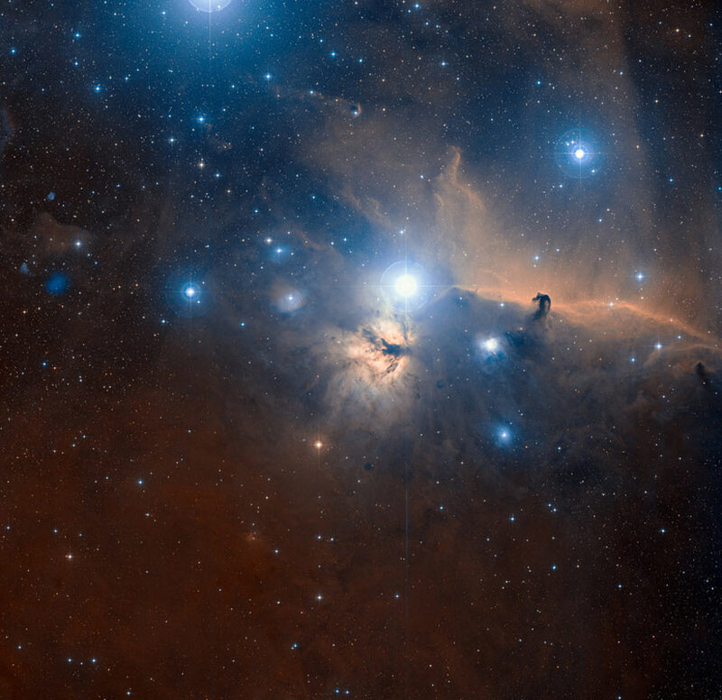
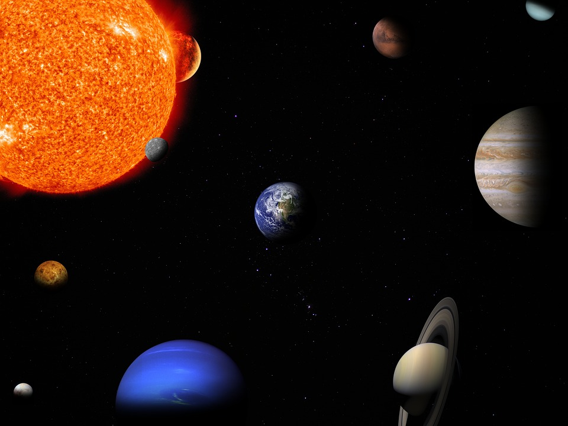

Под космосом подразумевается пустое пространство во Вселенной, находящееся за пределами планетарных атмосфер. В нем присутствуют частицы водорода, кислорода и пыли, правда их концентрация очень мала и составляет лишь несколько молекул на кубический метр. Также в некоторых участках межзвездной среды могут встречаться электромагнитное излучение и космические лучи. Последние представляют собой движущиеся на большой скорости атомы ядер и элементарные частицы.
Солнечная система – это спаянная силами взаимного притяжения система небесных тел. В нее входят: центральная звезда – Солнце, 8 больших планет с их спутниками, несколько тысяч малых планет, или астероидов, несколько сот наблюдавшихся комет и бесчисленное множество метеорных тел, пыли, газа и мелких частиц.
Плоскость, в которой лежит орбита Земли, называется эклиптикой. С высокой степенью точности можно утверждать, что орбиты всех остальных планет лежат в этой же плоскости, максимальное отклонение в 7° наблюдается у Меркурия. При этом все планеты крутятся в одну сторону, что является косвенным доказательством того факта, что когда-то всё вещество Солнечной системы было единым целым.
Движение планет хорошо описывается законами Кеплера. Согласно им, орбиты представляют собой эллипсы, в одном из фокусов которого располагается Солнце. Ближайшая к звезде точка орбиты называется перигелием, а наиболее отдаленная носит название афелий. Скорость движения планет меняется. Она возрастает при приближении к перигелию и падает при приближении к афелию. Планеты, расположенные ближе к светилу, совершают один оборот за меньший промежуток времени.
Планеты не только вращаются вокруг звезды, но и крутятся относительно собственной оси вращения. Условно считают, что 1 поворот вокруг звезды соответствует году на планете, а поворот вокруг собственной оси соответствует одним суткам. Так, на юпитерианские сутки равны примерно 10 часам, а юпитерианский год равен 11,86 земным годам.
Связаться с нами:
hrushcovandrei@gmail.com
8(495)553-23-13
{kind=link}
{kind=link}
{kind=link}